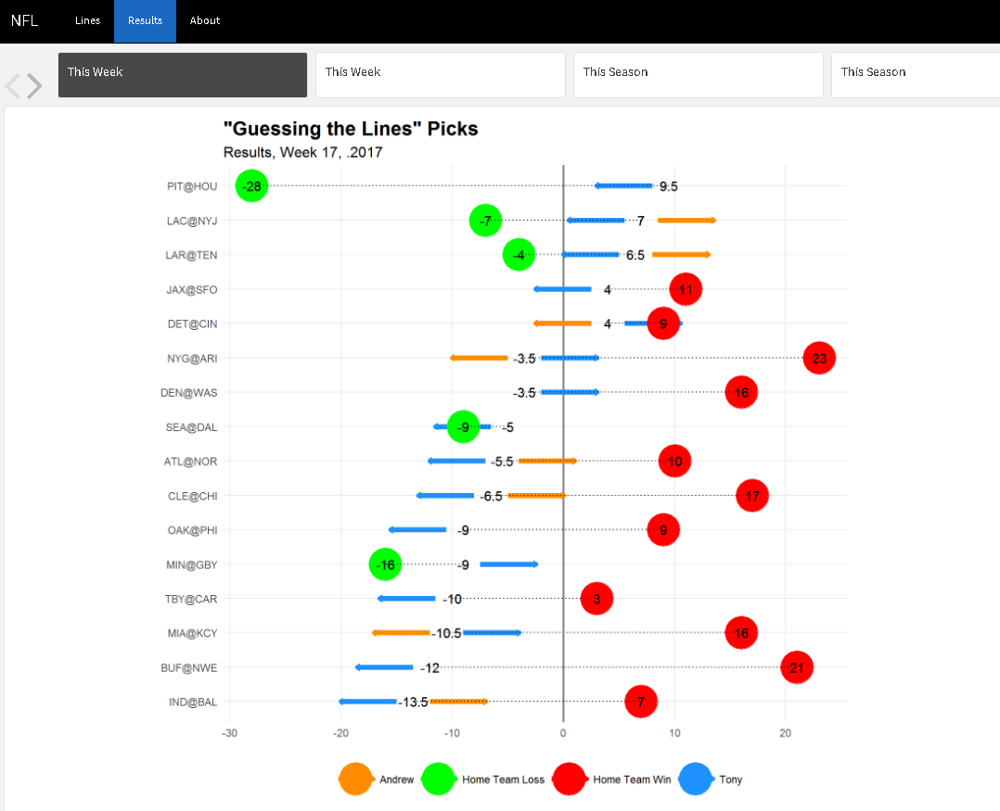

Thoughts on Using Flexdashboard
I’ve experimented with the {flexdashboard} package for a couple of things after first trying out not so long ago. In particular, I found the storyboard format to be my favorite. I used it to create the storyboard for tracking the activity of NBA team Twitter accounts.

Recently, I’ve been experimenting with the storyboard {flexdashboard} format for visualizing the weekly NFL picks that I do.

The Alternatives
In all, I have found {flexdashboard}s to be an extremely effective format. It functions as a good compromise among a number of different alternatives.
A “standard” document knitted from a .Rmd file (e.g. HTML, Markdown, Word, or PDF). In my opinion, the main advantage of
{flexdashboard}compared to the traditional .Rmd-knitr-Rmarkdown workflow is the ease with whichshinyapps and other interactive formats (e.g.htmlwidgetscan be integrated. 1A presentation knitted from a .Rmd file (i.e. a
beamer_presentation,ioslides_presentation,slidy_presentation, or arevealjs::revealjs_presentation). Compared to these formats, I have found that modifying the default styling of the base CSS is much simpler with the themes in the{flexdashboard}package.A “standard” R presentation (with the .Rpres extension). I must admit that I don’t have much experience with the .Rpres format–I prefer Rmarkdown and the capability that it offers to create different kinds of output from a single “base” file.
A
{shinydashboard}. In comparison toshinydashboards, I like the “light-weight” framework offered by{flexdashboard}. Whileshinydashboardis certainly a better option for developing a complex dashboard (perhaps for a business purpose), this is not typically my use case.
Some Other Opinions
Here’s a couple of my other thoughts and tips for using {flexdashboard}:
- Adding
JavaScriptfunctionality is straightforward.
For example, I have used the following snippet of code to add functionality for a “toggle” button to show/hide code.
<script>
$(".toggle").click(function() {
$(this).toggleClass("open");
});
</script>- Customizing the colors and styles (with
.css) is also simple.
When modifying a theme’s CSS, the typical/recommended approach is to use the browser’s “Inspect” tool (or some browser extension such as Selector Gadget to identify which specific styles to adjust.
For example, if the theme that is chosen for the {flexdashboard} (in particular, the storyboard format) uses the same styling for code and its output, the following CSS code can be used to distinguish the two.
pre.sourceCode.r {
background-color: #ffffff;
}To add to this technique, because the CSS files in the {flexdashboard} package, it’s not too difficult to simply pick out the file for the theme that is being used (see the resources/ folder in the package’s GitHub repo) and quickly identify what to modify.
Conclusion
As if I need to re-iterate it again, I would highly recommend trying out the {flexdashboard} package. If anything, you’ll learn that you don’t like it.
Footnotes
These can also be be embedded into .html files knitted from a .Rmdfile, but I think that it’s more natural in the
{flexdashboard}context. Also, I believe that the HTML format is the only standard .Rmd output format that has interactive capability, so other output formats cannot be used if opting for theknitr-Rmarkdown combo.↩︎